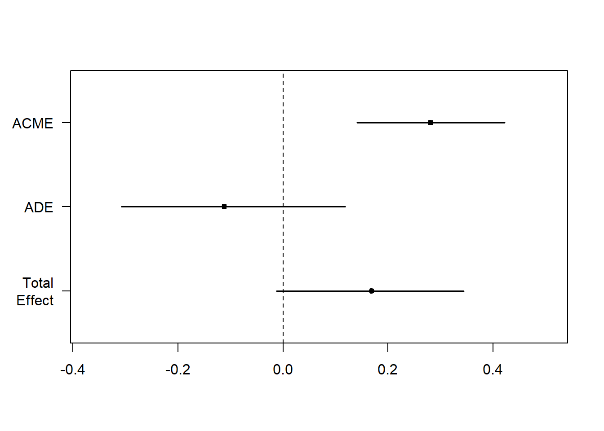

Topic 10 Mediation analysis
10.1 Overview
- What are mediation and moderation?
- Mediation analysis example
- Packages needed
- Baron and Kenny approach in R
- Mediation package approach in R
10.2 What is mediation?
Where the relationship between a predictor (X) and an outcome (Y) is mediated by another variable (M).
In the above model, we theorise that socio-economic status predicts education level, which predicts future prospects.
10.3 What is moderation?
There is a direct relationship between X and Y but it is affected by a moderator (M)
In the above model, we theorise that socio-economic status predicts future prospects but the strength of the relationship is changed by education level
10.4 Why different models?
This might be more appropriate if higher education costs money
This might be more appopriate if access to higher education is free
10.5 Mediation analysis
10.5.1 What is a mediation design?
Whether a mediation analysis is appropriate is determined as much by the design as by statistical criteria.
We must consider whether it makes sense to predict this relationship between variables
10.5.2 What is mediation analysis?
- Based on regression
A summary of the logic of mediation:
- The direct relationship between X and Y should be significant
- The relationship between X and M should be significant
- The relationship between M and Y (controlling for X) should be significant
- When controlling for M, the strength of the relationship between X and Y decreases and is not significant
- The direct relationship between X and Y should be significant
- The relationship between X and M should be significant
- The relationship between M and Y (controlling for X) should be significant
- When controlling for M, the strength of the relationship between X and Y decreases and is not significant
Baron & Kenny (1986) originally used a 4-step regression model to test each of these relationships.
10.5.3 What packages do we need?
library(mediation) #Mediation package
library(multilevel) #Sobel Test
library(bda) #Another Sobel Test option
library(gvlma) #Testing Model Assumptions
library(stargazer) #Handy regression tables10.6 Mediation analysis (the Baron and Kenny Approach)
10.6.1 Conducting mediation analysis (the Baron and Kenny Approach)
- Baron & Kenny (1986) originally used a 4-step regression model to test each of these relationships.
- The sobel test is then used to test the significance of mediation
10.6.2 Step 1: Total Effect
#1. Total Effect
fit <- lm(Y ~ X, data=Meddata)
summary(fit)##
## Call:
## lm(formula = Y ~ X, data = Meddata)
##
## Residuals:
## Min 1Q Median 3Q Max
## -10.917 -3.738 -0.259 2.910 12.540
##
## Coefficients:
## Estimate Std. Error t value Pr(>|t|)
## (Intercept) 19.88368 14.26371 1.394 0.1665
## X 0.16899 0.08116 2.082 0.0399 *
## ---
## Signif. codes: 0 '***' 0.001 '**' 0.01 '*' 0.05 '.' 0.1 ' ' 1
##
## Residual standard error: 5.16 on 98 degrees of freedom
## Multiple R-squared: 0.04237, Adjusted R-squared: 0.0326
## F-statistic: 4.336 on 1 and 98 DF, p-value: 0.0399310.6.3 Step 2: Path A (X on M)
#2. Path A (X on M)
fita <- lm(M ~ X, data=Meddata)
summary(fita)##
## Call:
## lm(formula = M ~ X, data = Meddata)
##
## Residuals:
## Min 1Q Median 3Q Max
## -9.5367 -3.4175 -0.4375 2.9032 16.4520
##
## Coefficients:
## Estimate Std. Error t value Pr(>|t|)
## (Intercept) 6.04494 13.41692 0.451 0.653
## X 0.66252 0.07634 8.678 8.87e-14 ***
## ---
## Signif. codes: 0 '***' 0.001 '**' 0.01 '*' 0.05 '.' 0.1 ' ' 1
##
## Residual standard error: 4.854 on 98 degrees of freedom
## Multiple R-squared: 0.4346, Adjusted R-squared: 0.4288
## F-statistic: 75.31 on 1 and 98 DF, p-value: 8.872e-1410.6.4 Step 3: Path B (M on Y, controlling for X)
#3. Path B (M on Y, controlling for X)
fitb <- lm(Y ~ M + X, data=Meddata)
summary(fitb)##
## Call:
## lm(formula = Y ~ M + X, data = Meddata)
##
## Residuals:
## Min 1Q Median 3Q Max
## -9.3651 -3.3037 -0.6222 3.1068 10.3991
##
## Coefficients:
## Estimate Std. Error t value Pr(>|t|)
## (Intercept) 17.32177 13.16216 1.316 0.191
## M 0.42381 0.09899 4.281 4.37e-05 ***
## X -0.11179 0.09949 -1.124 0.264
## ---
## Signif. codes: 0 '***' 0.001 '**' 0.01 '*' 0.05 '.' 0.1 ' ' 1
##
## Residual standard error: 4.756 on 97 degrees of freedom
## Multiple R-squared: 0.1946, Adjusted R-squared: 0.1779
## F-statistic: 11.72 on 2 and 97 DF, p-value: 2.771e-0510.6.5 Step 4: Reversed Path C (Y on X, controlling for M)
#4. Reversed Path C (Y on X, controlling for M)
fitc <- lm(X ~ Y + M, data=Meddata)
summary(fitc)##
## Call:
## lm(formula = X ~ Y + M, data = Meddata)
##
## Residuals:
## Min 1Q Median 3Q Max
## -14.438 -2.573 -0.030 3.010 11.779
##
## Coefficients:
## Estimate Std. Error t value Pr(>|t|)
## (Intercept) 96.11234 9.27663 10.361 < 2e-16 ***
## Y -0.11493 0.10229 -1.124 0.264
## M 0.69619 0.08356 8.332 5.27e-13 ***
## ---
## Signif. codes: 0 '***' 0.001 '**' 0.01 '*' 0.05 '.' 0.1 ' ' 1
##
## Residual standard error: 4.823 on 97 degrees of freedom
## Multiple R-squared: 0.4418, Adjusted R-squared: 0.4303
## F-statistic: 38.39 on 2 and 97 DF, p-value: 5.233e-1310.6.6 Viewing output
Summary Table
stargazer(fit, fita, fitb, fitc, type = "text", title = "Baron and Kenny Method")10.6.7 Interpreting Baron and Kenny approach
A reminder of the logic of mediation:
- The direct relationship between X and Y should be significant
- The relationship between X and M should be significant
- The relationship between M and Y (controlling for X) should be significant
- When controlling for M, the strength of the relationship between X and Y decreases and is not significant
10.6.8 Running the Sobel test
- The Sobel test checks the singificance of indirect effects
#Sobel Test
library(multilevel)
sobel(Meddata$X, Meddata$M, Meddata$Y)## $`Mod1: Y~X`
## Estimate Std. Error t value Pr(>|t|)
## (Intercept) 19.8836805 14.2637142 1.394004 0.16646905
## pred 0.1689931 0.0811601 2.082220 0.03992761
##
## $`Mod2: Y~X+M`
## Estimate Std. Error t value Pr(>|t|)
## (Intercept) 17.3217682 13.16215851 1.316028 1.912663e-01
## pred -0.1117904 0.09949262 -1.123605 2.639537e-01
## med 0.4238113 0.09899469 4.281152 4.371472e-05
##
## $`Mod3: M~X`
## Estimate Std. Error t value Pr(>|t|)
## (Intercept) 6.0449365 13.41692114 0.4505457 6.533122e-01
## pred 0.6625203 0.07634187 8.6783345 8.871741e-14
##
## $Indirect.Effect
## [1] 0.2807836
##
## $SE
## [1] 0.07313234
##
## $z.value
## [1] 3.83939
##
## $N
## [1] 100However, the above code only gives us to information we need to test the significance of the indirect effect, not the significance itself. Thereore, we can use the following, to get the actual significance of the indirect effect:
library(bda)## Loading required package: boot##
## Attaching package: 'boot'## The following object is masked from 'package:psych':
##
## logit## The following object is masked from 'package:car':
##
## logit## bda v15 (Bin Wang, 2021)mediation.test(Meddata$M, Meddata$X, Meddata$Y)## Sobel Aroian Goodman
## z.value 3.8393902040 3.8190525305 3.8600562907
## p.value 0.0001233403 0.0001339652 0.000113360910.7 Mediation analysis (the Mediation package)
10.7.1 Preacher & Hayes (2004) mediation approach
- Mediation package in R uses the Preacher & Hayes (2004) bootstrapping approach
- They argue that few people test the significance of the indirect effect
“Baron and Kenny simply state that perfect mediation has occurred if c’ becomes nonsignificant after controlling for M, so researchers have focused on that requirement.” (Preacher & Hayes, 2004, p. 719)
- Sobel test has low power (requires larger sample sizes)
- Sobel test assumes normality (often violated)
10.7.2 What is bootstrapping?
“Bootstrapping is a nonparametric approach to effect-size estimation and hypothesis testing that makes no assumptions about the shape of the distributions of the variables or the sampling distribution of the statistic” (Preacer & Hayes, 2004, p. 722)
Bootstrapping takes a large number of samples from our data and runs the analysis on each of these samples
The sampling is done randomly with replacement, and each sample in the bootstrap is the same size as our dataset
Using this method, we can create estimates with that fall within a narrower confidence interval (since we have now run the analysis on 100’s of samples)
Bootstrapping overcomes concerns about the distribution of our original dataset
10.7.3 Mediation example
Is the relationship between No of hours awake and wakefulness mediated by caffiene consumption?
This example is from Demos & Salas (2019). A Language, not a Letter: Learning Statistics in R (Chapter 14)
10.7.4 Step 1: Run the models
#Mediate package
library(mediation)
fitM <- lm(M ~ X, data=Meddata) #IV on M; Hours since waking predicting coffee consumption
fitY <- lm(Y ~ X + M, data=Meddata) #IV and M on DV; Hours since dawn and coffee predicting wakefulness10.7.5 Step 2: Check assumptions
gvlma(fitM) ##
## Call:
## lm(formula = M ~ X, data = Meddata)
##
## Coefficients:
## (Intercept) X
## 6.0449 0.6625
##
##
## ASSESSMENT OF THE LINEAR MODEL ASSUMPTIONS
## USING THE GLOBAL TEST ON 4 DEGREES-OF-FREEDOM:
## Level of Significance = 0.05
##
## Call:
## gvlma(x = fitM)
##
## Value p-value Decision
## Global Stat 8.833 0.06542 Assumptions acceptable.
## Skewness 6.314 0.01198 Assumptions NOT satisfied!
## Kurtosis 1.219 0.26949 Assumptions acceptable.
## Link Function 1.076 0.29959 Assumptions acceptable.
## Heteroscedasticity 0.223 0.63674 Assumptions acceptable.# We can see that the data is positively skewed. We might need to transform the data (we will discuss this another time).
gvlma(fitY)##
## Call:
## lm(formula = Y ~ X + M, data = Meddata)
##
## Coefficients:
## (Intercept) X M
## 17.3218 -0.1118 0.4238
##
##
## ASSESSMENT OF THE LINEAR MODEL ASSUMPTIONS
## USING THE GLOBAL TEST ON 4 DEGREES-OF-FREEDOM:
## Level of Significance = 0.05
##
## Call:
## gvlma(x = fitY)
##
## Value p-value Decision
## Global Stat 3.41844 0.4904 Assumptions acceptable.
## Skewness 1.85648 0.1730 Assumptions acceptable.
## Kurtosis 0.77788 0.3778 Assumptions acceptable.
## Link Function 0.71512 0.3977 Assumptions acceptable.
## Heteroscedasticity 0.06896 0.7929 Assumptions acceptable.10.7.6 Step 3.1: Run the mediation analysis on the models
The mediate function gives us:
- Average Causal Mediation Effects (ACME)
- Average Direct Effects (ADE)
- combined indirect and direct effects (Total Effect)
- the ratio of these estimates (Prop. Mediated).
The ACME here is the indirect effect of M (total effect - direct effect) and thus this value tells us if our mediation effect is significant.
fitMed <- mediate(fitM, fitY, treat="X", mediator="M")
summary(fitMed)##
## Causal Mediation Analysis
##
## Quasi-Bayesian Confidence Intervals
##
## Estimate 95% CI Lower 95% CI Upper p-value
## ACME 0.28159 0.14991 0.42 <2e-16 ***
## ADE -0.11100 -0.30382 0.09 0.260
## Total Effect 0.17059 0.00862 0.33 0.038 *
## Prop. Mediated 1.62837 0.55308 9.84 0.038 *
## ---
## Signif. codes: 0 '***' 0.001 '**' 0.01 '*' 0.05 '.' 0.1 ' ' 1
##
## Sample Size Used: 100
##
##
## Simulations: 100010.7.7 Step 3.2: Plot the mediation analysis of the models
The plot below reiterates what was on the previous slide:
- The confidence intervals of Total Effect and ACME are significant
- The confidence interval of ADE is not significant
Translation:
- Total effect is signficant: there is a relationship between X and Y (direct and indirect)
- ADE is not significant: the relationship between X and Y is not direct
- ACME is significant: the relationship between X and Y is mediated by M
plot(fitMed)10.7.8 Step 4: Bootstrap the mediation model
The plot below changes our interpretation slightly:
- The confidence interval ACME is significant
- The confidence interval of Total Effect and ADE are not significant
Translation:
Total effect is not signficant: the relationship between X and Y is not significant when we combine direct and indirect effects
ADE is not significant: the relationship between X and Y is not direct
ACME is significant: the relationship between X and Y is mediated by M
fitMedBoot <- mediate(fitM, fitY, boot=TRUE, sims=999, treat="X", mediator="M")## Running nonparametric bootstrapsummary(fitMedBoot)##
## Causal Mediation Analysis
##
## Nonparametric Bootstrap Confidence Intervals with the Percentile Method
##
## Estimate 95% CI Lower 95% CI Upper p-value
## ACME 0.2808 0.1409 0.42 <2e-16 ***
## ADE -0.1118 -0.3080 0.12 0.31
## Total Effect 0.1690 -0.0123 0.34 0.07 .
## Prop. Mediated 1.6615 -3.7235 11.33 0.07 .
## ---
## Signif. codes: 0 '***' 0.001 '**' 0.01 '*' 0.05 '.' 0.1 ' ' 1
##
## Sample Size Used: 100
##
##
## Simulations: 999plot(fitMedBoot) ##
10.8 References
Demos & Salas (2019). A Language, not a Letter: Learning Statistics in R (Chapter 14). https://ademos.people.uic.edu/ Accessed Jan 2020.
Preacher, K. J., & Hayes, A. F. (2004). SPSS and SAS procedures for estimating indirect effects in simple mediation models. Behavior research methods, instruments, & computers, 36(4), 717-731.